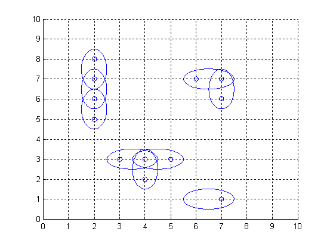

Problem E
Antenna Placement
Input: standard input
Output: standard
output
Time Limit: 1 second
Memory Limit: 32 MB
The Global Aerial Research Centre has been allotted the task of building the fifth generation of mobile phone nets in Sweden. The most striking reason why they got the job, is their discovery of a new, highly noise resistant, antenna. It is called 4DAir, and comes in four types. Each type can only transmit and receive signals in a direction aligned with a (slightly skewed) latitudinal and longitudinal grid, because of the interacting electromagnetic field of the earth. The four types correspond to antennas operating in the directions north, west, south, and east, respectively. Below is an example picture of places of interest, depicted by twelve small rings, and nine 4DAir antennas depicted by ellipses covering them.

Obviously, it is desirable to use as few
antennas as possible, but still provide coverage for each place of interest. We
model the problem as follows: Let A be a rectangular matrix describing
the surface of
Input
On the first row of input is a single positive
integer n, specifying the number of scenarios that follow. Each scenario
begins with a row containing two positive integers h and w, with
1<h<40 and 0<w<10. Thereafter is a matrix presented,
describing the points of interest in
For each scenario, output the minimum number of antennas necessary to cover all ‘*’-entries in the scenario’s matrix, on a row of its own.
Sample Input
2
7 9
ooo**oooo
**oo*ooo*
o*oo**o**
ooooooooo
*******oo
o*o*oo*oo
*******oo
10 1
*
*
*
o
*
*
*
*
*
*
Sample Output
17
5
Swedish National Contest.